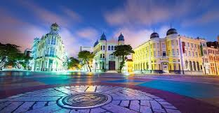

Recife - Marco Zero
Introdução Histórica
O Marco Zero, localizado no Recife, é um ponto histórico que marca o local onde a cidade foi fundada, em 1537. Situa-se no bairro do Recife Antigo, perto do porto. No século XVI, o local era o centro de atividades comerciais e portuárias, servindo como um dos principais pontos de conexão entre o Brasil e a Europa
A praça onde fica o Marco Zero é um símbolo de revitalização urbana, com intervenções culturais e turísticas ao longo dos anos. Hoje, além de sua importância histórica, o local é um ponto turístico, rodeado de arte, restaurantes, e eventos culturais, como o famoso carnaval de Recife.